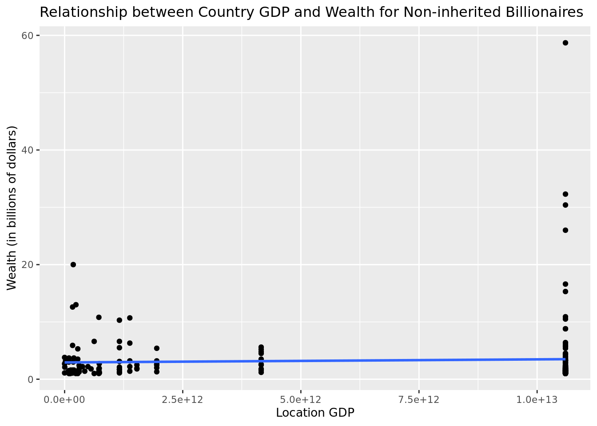
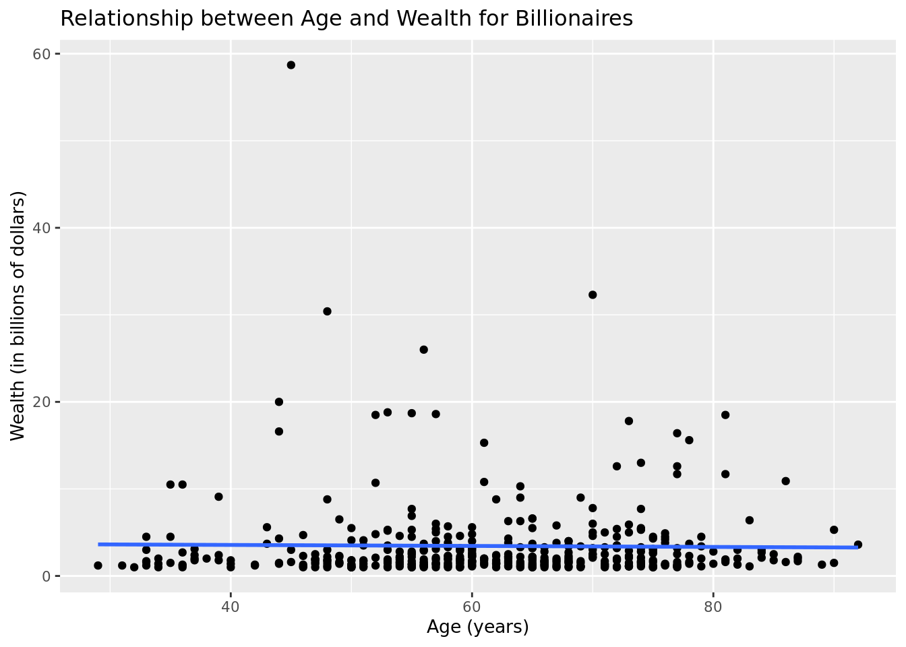
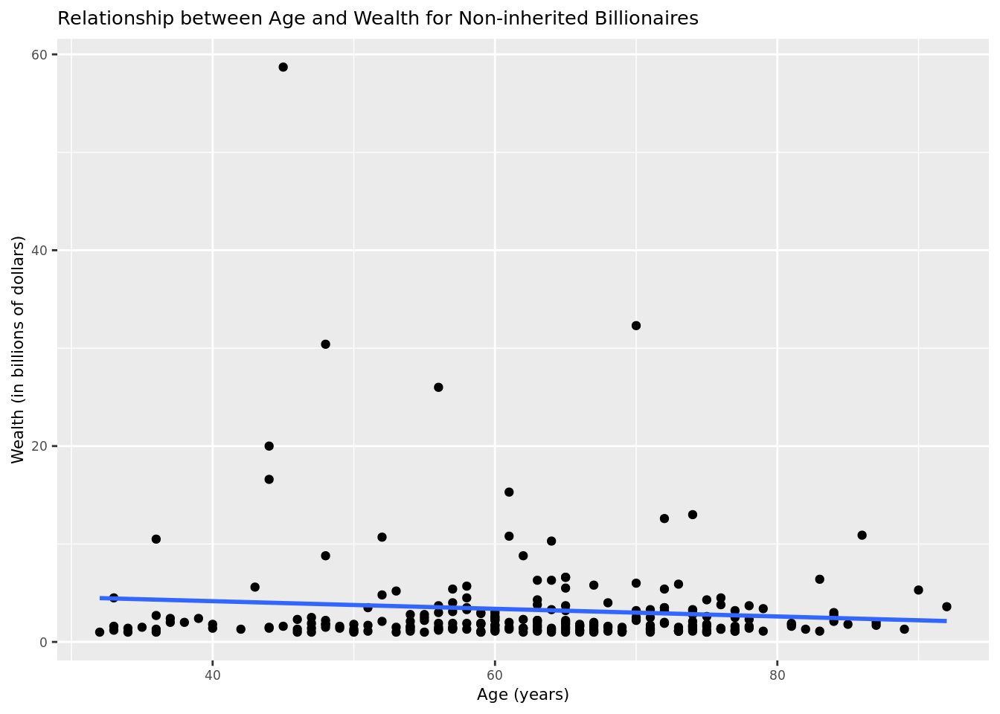
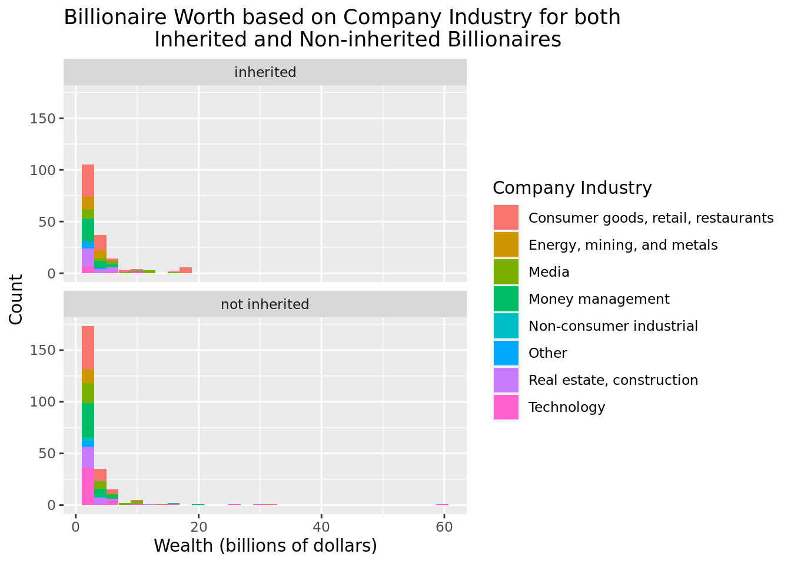

library(tidyverse)
library(tidymodels)Sevenr Project
Report
Introduction and data
billion <- read.csv("data/billionaires.csv")
glimpse(billion)Rows: 2,614
Columns: 22
$ name <chr> "Bill Gates", "Bill Gates", "Bill Gates", "Wa…
$ rank <int> 1, 1, 1, 2, 2, 2, 3, 3, 3, 4, 4, 4, 5, 5, 5, …
$ year <int> 1996, 2001, 2014, 1996, 2001, 2014, 1996, 200…
$ company.founded <int> 1975, 1975, 1975, 1962, 1962, 1990, 1896, 197…
$ company.name <chr> "Microsoft", "Microsoft", "Microsoft", "Berks…
$ company.relationship <chr> "founder", "founder", "founder", "founder", "…
$ company.sector <chr> " Software", " Software", " Software", " Fina…
$ company.type <chr> "new", "new", "new", "new", "new", "privatiza…
$ demographics.age <int> 40, 45, 58, 65, 70, 74, 0, 48, 77, 68, 56, 83…
$ demographics.gender <chr> "male", "male", "male", "male", "male", "male…
$ location.citizenship <chr> "United States", "United States", "United Sta…
$ location.country.code <chr> "USA", "USA", "USA", "USA", "USA", "MEX", "CH…
$ location.gdp <dbl> 8.10e+12, 1.06e+13, 0.00e+00, 8.10e+12, 1.06e…
$ location.region <chr> "North America", "North America", "North Amer…
$ wealth.type <chr> "founder non-finance", "founder non-finance",…
$ wealth.worth.in.billions <dbl> 18.5, 58.7, 76.0, 15.0, 32.3, 72.0, 13.1, 30.…
$ wealth.how.category <chr> "New Sectors", "New Sectors", "New Sectors", …
$ wealth.how.from.emerging <chr> "True", "True", "True", "True", "True", "True…
$ wealth.how.industry <chr> "Technology-Computer", "Technology-Computer",…
$ wealth.how.inherited <chr> "not inherited", "not inherited", "not inheri…
$ wealth.how.was.founder <chr> "True", "True", "True", "True", "True", "True…
$ wealth.how.was.political <chr> "True", "True", "True", "True", "True", "True…The dataset we are working with is a large listing of billionaires across the world along with information about them collected at three different time points. There are 2614 observations and 22 variables. Not every observation is a unique billionaire; many are repeated up to three times (one at each time point). In addition, not every 22 variable is statistically interesting; many, such as name, rank, and company.name are identifying variables. However, the other variables are statistically useful and interesting, and our goal is to investigate them.
The dataset was created in 2016 by Caroline Freund and Sarah Oliver, who are (or were) researchers at the Peterson Institute for International Economics. They compiled the list of individuals from Forbes billionaire lists dating from 1996 to 2015. A large percentage of the additional information collected was publicly available, coming from sources such as Forbes, news articles, and company websites.
One caveat about this dataset, and any data categorizing wealth, is that defining wealth is a subjective matter. For example, Forbes had to make many choices in determining who to include in the lists used as sources for this dataset. One such choice was to exclude billionaires that obtained wealth from official positions (e.g. high government roles, state leader positions, etc.). Another choice was to exclude billionaires who obtained their wealth via illegal methods. In addition, individuals and companies may fabricate what they publish about themselves, or simply characterize themselves subjectively. Thus, when drawing conclusions from analysis of this dataset, we must be careful not to generalize statements about legal nonpolitial billionaires to any person on the planet who accumulates wealth.
Relevant variables
As mentioned, there are 22 variables, of which some are identifying variables, and the rest are more useful or interesting. They are listed in the table:
| Variable name (unmodified) | Meaning |
|---|---|
| company.relationship | relationship to the company (founder, etc.) |
| company.sector | the sector of the economy to which the business belongs |
| company.type | type of business of the company |
| demographics.age | age of the individual |
| location.citizenship | name of the country for which the individual has citizenship |
| location.country.code | 3-letter country code for which the individual has citizenship |
| location.gdp | gross domestic product of the country for which the individual has citizenship |
| location.region | part of the world where the individual lives |
| wealth.worth.in.billions | net worth of the individual in billions of USD |
| wealth.how.category | where the individual’s money came from |
| wealth.how.industry | the specific industry the individual profited from |
| wealth.how.inherited | whether the individual’s wealth was inherited or not |
| wealth.how.was.founder | whether the individual founded their company or not |
Of these variables, the wealth.worth.in.billions variable (underlined and italicized) makes for an interesting response variable; that is, we are interested in seeing how this variable could possibly be affected by the other variables. One variable we are especially curious about exploring, given today’s discourse about where wealth comes from, is wealth.how.inherited; do the billionaires who inherit some wealth to begin with accumulate more differently from those who are “self-made”?
Research question and hypothesis
Thus, our research question is: “do the predictors of a linear regression modeling billionaire wealth change depending on if the wealth was inherited or not inherited?” That is, do the factors that are associated with higher levels of billionaire wealth change given that the billionaire had inherited money to begin with or not?
Our hypothesis is that there will be a difference between the model for inherited billionaires and the model for self-made billionaires. Which variables will or will not be included is rather unpredictable, as many factors may or may not play a true role in wealth accumulation. However, we predict that wealth.how.industry, which describes the industry sector, may be relevant, as it is generally well-known that technology is a rapidly growing sector.
Methodology
Data cleaning
Before any analysis, the dataset was tidied up.
One step was to filter for a single year instead of working with data over time. We chose the year 2001, because of the other variables, location.gdp was of interest, and 2001 is the most recent year for which there is data on GDP across the world (there is no GDP data for 2014).
billion |>
group_by(year) |>
summarize(mean_gdp = mean(location.gdp))# A tibble: 3 × 2
year mean_gdp
<int> <dbl>
1 1996 3.51e12
2 2001 5.84e12
3 2014 0 billion2001 <- billion |>
filter(year == 2001) Another variable that is of interest is wealth.how.industry, whose values are strings representing the industries that made the billionaires wealthy. First, we renamed the variable to industry. Then, after noticing that several industries are highly related, we combined them together. For example, “Venture capital”, “Hedge funds”, “Diversified financial”, and “Private equity/leveraged buyout” all fit into the “Money management” industry.
billion2001 <- billion2001 |>
rename(industry = wealth.how.industry) |>
mutate(
industry = if_else(industry == 0, "Other", industry),
industry = if_else(industry == "Energy" | industry == "Mining and metals", "Energy, mining, and metals", industry),
industry = if_else(str_detect(industry, "Technology"), "Technology", industry),
industry = if_else(industry == "Diversified financial", "Money management", industry),
industry = if_else(industry == "Hedge funds", "Money management", industry),
industry = if_else(industry == "Venture Capital", "Money management", industry),
industry = if_else(industry == "Private equity/leveraged buyout", "Money management", industry),
industry = if_else(industry == "Money Management", "Money management", industry),
industry = if_else(industry == "Constrution" | industry == "Real Estate", "Real estate, construction", industry),
industry = if_else(industry == "Consumer" | industry == "Retail, Restaurant", "Consumer goods, retail, restaurants", industry)
)Are the billionaires old or young? demographics.age is another interesting variable; however, several billionaires have an age of 0 listed. We found out that several of the individuals with listed age 0 had died before 2001. Because researching dozens of individual death dates or ages demands excessive effort, we decided to filter out any age with 0 after renaming the variable to just ‘age’.
billion2001 <- billion2001 |>
rename(age = demographics.age) |>
filter(age != 0)Company type may also be relevant to wealth accumulation. Thus, we tidied up company.type for use by merging misspelled or mistyped values. In the end, the three values are “new”, “acquired”, and “other”, with “new” taking precedent over “acquired”.
billion2001 <- billion2001 |>
mutate(
company.type = case_when(str_detect(company.type, "new") ~ "new",
str_detect(company.type, "quired") ~ "acquired",
TRUE ~ "other")
)How the individual is related to their company (e.g. CEO, investor, founder, etc.) is represented by company.relationship. We renamed the variable to company.relation and cleaned it up similarly to company.type. The unique relation types are founder, chairman, CEO, owner, investor, and relation, with founder taking precedent over CEO, CEO over the joint category of chairman/investor/owner, and chairman/investor/owner over relation. President was collapsed into CEO, and employee and lawyer were collapsed into relation. Two observations where company relation is unknown were filtered out.
billion2001 <- billion2001 |>
rename(company.relation = company.relationship) |>
mutate(
company.relation = if_else(str_detect(company.relation, "founder"), "founder", company.relation),
company.relation = if_else(str_detect(company.relation, "president"), "ceo", company.relation),
company.relation = if_else(str_detect(company.relation, "CEO"), "ceo", company.relation),
company.relation = if_else(str_detect(company.relation, "Officer"), "ceo", company.relation),
company.relation = if_else(str_detect(company.relation, "man"), "chairman/investor/owner", company.relation),
company.relation = if_else(str_detect(company.relation, "investor"), "chairman/investor/owner", company.relation),
company.relation = if_else(str_detect(company.relation, "owner"), "chairman/investor/owner", company.relation),
company.relation = if_else(str_detect(company.relation, "lawer"), "relation", company.relation),
company.relation = if_else(str_detect(company.relation, "yee"), "relation", company.relation),
company.relation = if_else(str_detect(company.relation, "group"), "relation", company.relation)
) |>
filter(nchar(company.relation) > 2)How old the company is may also give some insight. We calculated the age of the company by subtracting its founding year (from company.founded) from 2001, saving the results to a column named company.age. A single observation with 0 as a founding year was dropped.
billion2001 <- billion2001 |>
filter(company.founded > 0) |>
mutate(company.age = 2001 - company.founded)The end result is a dataset with 413 observations, each of which is a billionaire with information on them from the year 2001.
glimpse(billion2001)Rows: 413
Columns: 23
$ name <chr> "Bill Gates", "Warren Buffett", "Paul Allen",…
$ rank <int> 1, 2, 3, 4, 6, 7, 8, 9, 10, 10, 12, 13, 14, 1…
$ year <int> 2001, 2001, 2001, 2001, 2001, 2001, 2001, 200…
$ company.founded <int> 1975, 1962, 1975, 1977, 1980, 1962, 1962, 196…
$ company.name <chr> "Microsoft", "Berkshire Hathaway", "Microsoft…
$ company.relation <chr> "founder", "founder", "founder", "founder", "…
$ company.sector <chr> " Software", " Finance", "technology", " soft…
$ company.type <chr> "new", "new", "new", "new", "new", "new", "ne…
$ age <int> 45, 70, 48, 56, 44, 53, 55, 57, 52, 81, 73, 4…
$ demographics.gender <chr> "male", "male", "male", "male", "male", "male…
$ location.citizenship <chr> "United States", "United States", "United Sta…
$ location.country.code <chr> "USA", "USA", "USA", "USA", "SAU", "USA", "US…
$ location.gdp <dbl> 1.06e+13, 1.06e+13, 1.06e+13, 1.06e+13, 1.83e…
$ location.region <chr> "North America", "North America", "North Amer…
$ wealth.type <chr> "founder non-finance", "founder non-finance",…
$ wealth.worth.in.billions <dbl> 58.7, 32.3, 30.4, 26.0, 20.0, 18.8, 18.7, 18.…
$ wealth.how.category <chr> "New Sectors", "Traded Sectors", "New Sectors…
$ wealth.how.from.emerging <chr> "True", "True", "True", "True", "True", "True…
$ industry <chr> "Technology", "Consumer goods, retail, restau…
$ wealth.how.inherited <chr> "not inherited", "not inherited", "not inheri…
$ wealth.how.was.founder <chr> "True", "True", "True", "True", "True", "True…
$ wealth.how.was.political <chr> "True", "True", "True", "True", "True", "True…
$ company.age <dbl> 26, 39, 26, 24, 21, 39, 39, 39, 39, 39, 85, 2…Preliminary visualizations
Methods
Linear Regression Models
The use of linear regression models help us answer our research question because they show the strength of different explanatory variables in contributing to overall wealth. We can see how the strength differs in the group of billionaires who inherited their wealth versus the self-made billionaires. This helps us to find if the factors that are associated with higher levels of billionaire wealth change given that the billionaire had inherited money to begin with or not.
inheritance_grouping <- billion2001 |>
mutate(inherited = if_else(str_detect(wealth.how.inherited, "not inherited"), "not inherited", "inherited"))
yes_inherited <- inheritance_grouping |>
filter(inherited == "inherited")
not_inherited <- inheritance_grouping |>
filter(inherited == "not inherited")#regression by location.gdp for both groups
linear_reg() |>
set_engine("lm") |>
fit(wealth.worth.in.billions ~ location.gdp, data = billion2001) |>
tidy()# A tibble: 2 × 5
term estimate std.error statistic p.value
<chr> <dbl> <dbl> <dbl> <dbl>
1 (Intercept) 3.11e+ 0 3.87e- 1 8.03 1.02e-14
2 location.gdp 5.36e-14 4.89e-14 1.10 2.74e- 1billion2001 |>
ggplot(aes(x = location.gdp, y = wealth.worth.in.billions)) +
geom_point() +
geom_smooth(method = "lm", se = F) +
labs(title = "What is the Relationship between Location GDP and Wealth for Billionaires?",
x = "Location GDP",
y = "Wealth (in billions of dollars)") +
theme(text = element_text(size = 10))`geom_smooth()` using formula = 'y ~ x'
#regression for location.gdp for inherited
linear_reg() |>
set_engine("lm") |>
fit(wealth.worth.in.billions ~ location.gdp, data = yes_inherited) |>
tidy()# A tibble: 2 × 5
term estimate std.error statistic p.value
<chr> <dbl> <dbl> <dbl> <dbl>
1 (Intercept) 3.28e+ 0 4.43e- 1 7.40 5.69e-12
2 location.gdp 6.60e-14 6.01e-14 1.10 2.74e- 1yes_inherited |>
ggplot(aes(x = location.gdp, y = wealth.worth.in.billions)) +
geom_point() +
geom_smooth(method = "lm", se = F) +
labs(title = "What is the Relationship between Location GDP and Wealth for Billionaires who Inherited Money?",
x = "Location GDP",
y = "Wealth (in billions of dollars)") +
theme(text = element_text(size = 10))`geom_smooth()` using formula = 'y ~ x'#regression for location.gdp for not inherited
linear_reg() |>
set_engine("lm") |>
fit(wealth.worth.in.billions ~ location.gdp, data = not_inherited) |>
tidy()# A tibble: 2 × 5
term estimate std.error statistic p.value
<chr> <dbl> <dbl> <dbl> <dbl>
1 (Intercept) 2.93e+ 0 6.07e- 1 4.83 0.00000248
2 location.gdp 5.35e-14 7.34e-14 0.729 0.467 not_inherited |>
ggplot(aes(x = location.gdp, y = wealth.worth.in.billions)) +
geom_point() +
geom_smooth(method = "lm", se = F) +
labs(title = "What is the Relationship between Location GDP and Wealth for Self-Made Billionaires?",
x = "Location GDP",
y = "Wealth (in billions of dollars)") +
theme(text = element_text(size = 10))`geom_smooth()` using formula = 'y ~ x'
For all Billionaires:
\[ wealth\_in\_billions\ = 5.36*10^-14* location\_gdp + 3.105 \]
\[ adjusted\_r^2 = 0.0004839317 \]
\[ AIC = 2470.14 \]
For Billionaires who inherited their wealth:
\[ wealth\_in\_billions\ = 6.59*10^-14*location\_gdp + 3.28 \]
\[ adjusted\_r^2 = 0.001188114 \]
\[ AIC = 964.0363 \]
For Billionaires who did not inherit their wealth:
\[ wealth\_in\_billions\ = 5.35*10^-14*location\_gdp + 2.93 \]
\[ adjusted\_r^2 = -0.001972628 \]
\[ AIC = 1488.223 \]
#regression by industry for both groups
linear_reg() |>
set_engine("lm") |>
fit(wealth.worth.in.billions ~ industry, data = billion2001) |>
tidy()# A tibble: 8 × 5
term estimate std.error statistic p.value
<chr> <dbl> <dbl> <dbl> <dbl>
1 (Intercept) 3.97 0.435 9.11 3.72e-18
2 industryEnergy, mining, and metals -1.89 0.934 -2.02 4.40e- 2
3 industryMedia 0.140 0.789 0.178 8.59e- 1
4 industryMoney management -1.21 0.684 -1.77 7.75e- 2
5 industryNon-consumer industrial -1.62 2.41 -0.670 5.04e- 1
6 industryOther -2.11 1.34 -1.57 1.17e- 1
7 industryReal estate, construction -1.38 0.779 -1.77 7.79e- 2
8 industryTechnology 0.831 0.769 1.08 2.81e- 1billion2001 |>
ggplot(aes(x = industry, y = wealth.worth.in.billions)) +
geom_point() +
geom_smooth(method = "lm", se = F) +
labs(title = "What is the Relationship between Industry Type and Wealth for Billionaires who Inherited Money?",
x = "Industry Type",
y = "Wealth (in billions of dollars)") +
theme(text = element_text(size = 8))`geom_smooth()` using formula = 'y ~ x'
#regression by industry for inherited
linear_reg() |>
set_engine("lm") |>
fit(wealth.worth.in.billions ~ industry, data = yes_inherited) |>
tidy()# A tibble: 7 × 5
term estimate std.error statistic p.value
<chr> <dbl> <dbl> <dbl> <dbl>
1 (Intercept) 4.70 0.484 9.70 6.53e-18
2 industryEnergy, mining, and metals -2.15 0.982 -2.19 2.99e- 2
3 industryMedia 0.438 0.963 0.455 6.49e- 1
4 industryMoney management -1.97 0.809 -2.43 1.61e- 2
5 industryOther -2.87 1.40 -2.05 4.21e- 2
6 industryReal estate, construction -2.08 0.888 -2.34 2.03e- 2
7 industryTechnology -1.09 1.27 -0.854 3.94e- 1yes_inherited |>
ggplot(aes(x = industry, y = wealth.worth.in.billions)) +
geom_point() +
geom_smooth(method = "lm", se = F) +
labs(title = "What is the Relationship between Industry Type and Wealth for Billionaires who Inherited Money?",
x = "Industry Type",
y = "Wealth (in billions of dollars)") +
theme(text = element_text(size = 8))`geom_smooth()` using formula = 'y ~ x'#regression by industry for not inherited
linear_reg() |>
set_engine("lm") |>
fit(wealth.worth.in.billions ~ industry, data = not_inherited) |>
tidy()# A tibble: 8 × 5
term estimate std.error statistic p.value
<chr> <dbl> <dbl> <dbl> <dbl>
1 (Intercept) 3.25 0.695 4.67 0.00000502
2 industryEnergy, mining, and metals -1.80 1.60 -1.13 0.260
3 industryMedia 0.216 1.18 0.183 0.855
4 industryMoney management -0.474 1.04 -0.455 0.650
5 industryNon-consumer industrial -0.897 2.78 -0.323 0.747
6 industryOther -1.35 2.30 -0.585 0.559
7 industryReal estate, construction -0.681 1.22 -0.560 0.576
8 industryTechnology 1.81 1.05 1.71 0.0878 not_inherited |>
ggplot(aes(x = industry, y = wealth.worth.in.billions)) +
geom_point() +
geom_smooth(method = "lm", se = F) +
labs(title = "What is the Relationship between Industry Type and Wealth for Billionaires who did not Inherit Money?",
x = "Industry Type",
y = "Wealth (in billions of dollars)") +
theme(text = element_text(size = 7))`geom_smooth()` using formula = 'y ~ x'DONT KNOW HOW INDUSTRY SLOPE WORKS
For all Billionaires:
\[ wealth\_in\_billions\ = IDK* industry + 3.97 \]
\[ adjusted\_r^2 = 0.0189506 \]
\[ AIC = 2468.364 \]
For Billionaires who inherited their wealth:
\[ wealth\_in\_billions\ = IDK*industry + 4.69 \]
\[ adjusted\_r^2 = 0.05150269 \]
\[ AIC = 959.9096 \]
For Billionaires who did not inherit their wealth:
\[ wealth\_in\_billions\ = IDK*industry + 3.25 \]
\[ adjusted\_r^2 = 0.004701796 \]
\[ AIC = 1492.497 \]
#regression by age for both groups
linear_reg() |>
set_engine("lm") |>
fit(wealth.worth.in.billions ~ age, data = billion2001) |>
tidy()# A tibble: 2 × 5
term estimate std.error statistic p.value
<chr> <dbl> <dbl> <dbl> <dbl>
1 (Intercept) 3.79 1.17 3.23 0.00133
2 age -0.00570 0.0187 -0.306 0.760 billion2001 |>
ggplot(aes(x = age, y = wealth.worth.in.billions)) +
geom_point() +
geom_smooth(method = "lm", se = F) +
labs(title = "What is the Relationship between Age and Wealth for Billionaires?",
x = "Age (years)",
y = "Wealth (in billions of dollars)") +
theme(text = element_text(size = 10))`geom_smooth()` using formula = 'y ~ x'
#regression by age for inherited
linear_reg() |>
set_engine("lm") |>
fit(wealth.worth.in.billions ~ age, data = yes_inherited) |>
tidy()# A tibble: 2 × 5
term estimate std.error statistic p.value
<chr> <dbl> <dbl> <dbl> <dbl>
1 (Intercept) 0.980 1.42 0.689 0.492
2 age 0.0440 0.0230 1.91 0.0573 yes_inherited |>
ggplot(aes(x = age, y = wealth.worth.in.billions)) +
geom_point() +
geom_smooth(method = "lm", se = F) +
labs(title = "What is the Relationship between Age and Wealth for Billionaires who Inherited Money?",
x = "Age (years)",
y = "Wealth (in billions of dollars)") +
theme(text = element_text(size = 10))`geom_smooth()` using formula = 'y ~ x'
#regression by age for not inherited
linear_reg() |>
set_engine("lm") |>
fit(wealth.worth.in.billions ~ age, data = not_inherited) |>
tidy()# A tibble: 2 × 5
term estimate std.error statistic p.value
<chr> <dbl> <dbl> <dbl> <dbl>
1 (Intercept) 5.73 1.74 3.28 0.00118
2 age -0.0391 0.0274 -1.43 0.155 not_inherited |>
ggplot(aes(x = age, y = wealth.worth.in.billions)) +
geom_point() +
geom_smooth(method = "lm", se = F) +
labs(title = "What is the Relationship between Industry Type and Wealth for Billionaires who did not Inherit Money?",
x = "Age (years)",
y = "Wealth (in billions of dollars)") +
theme(text = element_text(size = 8))`geom_smooth()` using formula = 'y ~ x'
For all Billionaires:
\[ wealth\_in\_billions\ = -0.0057*age + 3.79 \]
\[ adjusted\_r^2 = -0.00220548 \]
\[ AIC = 2471.249 \]
For Billionaires who inherited their wealth:
\[ wealth\_in\_billions\ = 0.04*age + 0.98 \]
\[ adjusted\_r^2 = 0.01515218 \]
\[ AIC = 961.5865 \]
For Billionaires who did not inherit their wealth:
\[ wealth\_in\_billions\ = -0.04*age + 5.73 \]
\[ adjusted\_r^2 = 0.004316155 \]
\[ AIC = 1486.718 \]
Multivariate Linear Regression
inher<- linear_reg() |>
set_engine("lm") |>
fit(wealth.worth.in.billions ~ location.gdp * age * industry, data = yes_inherited)
glance(inher)$AIC[1] 968.8808notinher<- linear_reg() |>
set_engine("lm") |>
fit(wealth.worth.in.billions ~ location.gdp * age * industry, data = not_inherited)
glance(notinher)$AIC[1] 1522.839This model helps to answer the research question by utilizing fit statistics to find the explanatory variables that best predict wealth. By calculating a different model for different inheritance statuses, we are able to see if the results differ based on that grouping and therefore see if different variables predict wealth for different inheritance statuses. Using BLANK, we adjusted the explanatory variables to minimize the AIC, a statistic that represents the fit of the model. For billionaires who inherited their wealth, the optimal combination of explanatory variables for the model was THIS. The resulting AIC for the inherited model was THIS. For billionaires that are self made, the optimal combination of explanatory variables was THIS which resulted in an AIC of THIS.
Histogram Split by Inheritance Status
billion2001 |>
mutate(wealthclean = ifelse(wealth.how.inherited == "not inherited", "Not Inherited", "Inherited"))|>
filter(wealth.how.category!=0)|>
ggplot(aes(x= wealth.worth.in.billions, fill = wealth.how.category))+
geom_histogram()+
facet_wrap(vars(wealthclean))`stat_bin()` using `bins = 30`. Pick better value with `binwidth`.
//summary statistics and why we did this
Results
TALK ABOUT WHAT YOU GOT FROM PROBABILITIES AND MODELS TO ANSWER RESEARCH QUESTION:
“do the predictors of a linear regression modeling billionaire wealth change depending on if the wealth was inherited or not inherited?” That is, do the factors that are associated with higher levels of billionaire wealth change given that the billionaire had inherited money to begin with or not?
Summary statistics:
Changelog
4/3:
filtered year and variables (variable_filter)
grouped by inheritance (inheritance_grouping, yes_inherited, not_inherited)
regressions by location, age, sector; univariate models from total, then individual group data frames
4/5:
renamed variable_filter to billion2001, renamed wealth.how.industry to industry
removed selecting variables (aka leaving all variables in)
added comments
commented out glimpse(billion)
cleaned up and combined industry levels (check underneath for groupings)
changed regression by company.sector to regression by industry
4/7:
histogram model added and explained
statistics from model added to results portion